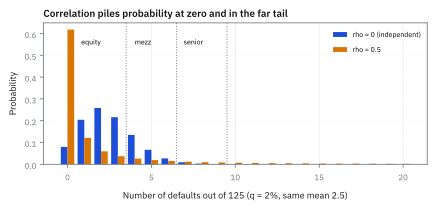

22.4 CDOs, Synthetic CDOs, and the Gaussian Copula
CDO แบ่งขาดทุนของพอร์ตสินเชื่อเป็นชั้น ขาดทุนเฉลี่ยของพอร์ตไม่ขึ้นกับ correlation แต่ขาดทุนของแต่ละชั้นขึ้นกับมันมาก และ Gaussian copula คือเครื่องมือที่ตลาดใช้ใส่ correlation ตัวนั้นเข้าไป
พอร์ตอ้างอิง 125 บริษัท บริษัทละ \$1 ล้าน แต่ละบริษัทมีโอกาสผิดนัดใน 1 ปี 2% และถ้าผิดนัดได้คืนศูนย์ ขาดทุนเฉลี่ยของพอร์ตจึงเป็น \$2.5 ล้าน ธนาคารขาย protection บนชั้นบนสุด (super senior) ซึ่งรับขาดทุนตั้งแต่บริษัทที่ 7 ที่ผิดนัดเป็นต้นไป แล้วคิดว่า “ขาดทุนเฉลี่ยของพอร์ตไม่ขึ้นกับ correlation ชั้นของเราก็เสี่ยงเท่าเดิม” ถ้าบริษัทผิดนัดอิสระกัน ชั้นนี้ขาดทุนเฉลี่ย \$18,286 ถ้า correlation ของมูลค่าบริษัทเป็น 0.5 จะเป็นเท่าไร?
ลองตอบก่อนเปิดเฉลย
\$1,235,442 หรือ 67.6 เท่า ทั้งที่ขาดทุนเฉลี่ยของพอร์ตยังเป็น \$2.5 ล้านเท่าเดิม correlation ไม่ได้เพิ่มขาดทุนรวม แต่ย้ายมันจากชั้นล่างไปชั้นบน ชั้น equity ขาดทุนเฉลี่ยลดจาก \$2.09 ล้านเป็น \$0.84 ล้าน ขั้นที่ 6 คิดตารางนี้ครบทุกชั้น
สิ่งที่เราจะสร้าง
22.3 แบ่งเงินต้นตามลำดับเวลา หน้านี้แบ่งขาดทุนตามลำดับความเจ็บ collateralized debt obligation (CDO) รวมหุ้นกู้หรือเงินกู้หลายบริษัทไว้ด้วยกัน แล้วให้ชั้นล่างรับขาดทุนก่อน ชั้นบนจะเจ็บก็ต่อเมื่อหลายบริษัทผิดนัดพร้อมกัน ราคาของชั้นบนจึงขึ้นกับคำถามเดียว: บริษัทผิดนัดพร้อมกันบ่อยแค่ไหน
เราจะเขียนขาดทุนของชั้นจากขาดทุนของพอร์ต ดูสองลูกหนี้ที่ขาดทุนเฉลี่ยเท่ากันแต่ชั้นบนเจ็บต่างกันสิบเท่า สร้าง Gaussian copula แบบปัจจัยเดียว (ต่อจาก 5.6 และการสร้าง normal หลายตัวแปรใน 8.9) ใช้มันกับพอร์ต 125 บริษัทของตัวอย่าง Donnelly และ Embrechts ตั้งราคาชั้นด้วยขาเบี้ยและขาชดเชยแบบ CDS ใน 20.7 นับการผิดนัดเมื่อแต่ละบริษัทมีโอกาสไม่เท่ากัน แล้วดูว่า correlation ตัวเดียวพลาดอะไร
ศัพท์ที่ใช้ในหัวข้อนี้
- CDO และ tranche
- ตราสารที่แบ่งขาดทุนของพอร์ตสินเชื่อเป็นชั้น แต่ละชั้นกำหนดด้วยช่วงขาดทุนที่มันรับ ใช้สร้างของเสี่ยงมากและเสี่ยงน้อยจากพอร์ตเดียว
- Attachment และ detachment point
- ขาดทุนของพอร์ตที่ชั้นหนึ่งเริ่มเจ็บ (attachment) และหมดทั้งชั้น (detachment) เช่นชั้น 3%–7% ส่วนต่างของสองค่าคือความหนาของชั้น
- Equity, mezzanine, senior
- ชั้นล่างสุด ชั้นกลาง และชั้นบน equity รับขาดทุนก้อนแรกจึงได้ผลตอบแทนสูงสุด senior เจ็บเฉพาะเมื่อขาดทุนทะลุชั้นล่างทั้งหมด
- Cash CDO และ synthetic CDO
- Cash CDO ถือหุ้นกู้หรือเงินกู้จริง synthetic CDO ไม่ถือ แต่อ้างอิงรายชื่อบริษัทผ่าน credit default swap (CDS) ผู้ขาย protection ของชั้นรับเบี้ยและจ่ายเมื่อขาดทุนเข้าชั้น
- Premium leg และ default leg
- ขาเบี้ยคือเงินที่ผู้ซื้อ protection จ่ายทุกงวดบนส่วนของชั้นที่ยังเหลือ ขาชดเชยคือเงินที่ผู้ขาย protection จ่ายเท่าขาดทุนที่เพิ่งเข้าชั้น ราคายุติธรรมคือเบี้ยที่ทำให้สองขามีค่าเท่ากัน
- Gaussian copula แบบปัจจัยเดียว
- แบบจำลองที่ให้มูลค่าของทุกบริษัทขยับตามปัจจัยร่วมตัวเดียวบวกส่วนเฉพาะตัว บริษัทผิดนัดเมื่อมูลค่าต่ำกว่าเกณฑ์ ใช้ต่อโอกาสผิดนัดรายบริษัทเข้าด้วยกันด้วย correlation ตัวเดียว
- Implied correlation และ tail dependence
- Implied correlation คือ $\rho$ ที่ทำให้แบบจำลองให้ราคาตรงกับตลาด tail dependence คือโอกาสที่ค่าสุดขั้วเกิดพร้อมกัน ซึ่ง correlation ตัวเดียวไม่ได้บอก
สัญลักษณ์และหน่วย
| สัญลักษณ์ | ความหมาย | หน่วย |
|---|---|---|
| $L$ | ขาดทุนของพอร์ต (เป็นสัดส่วน หรือจำนวนบริษัทที่ผิดนัดเมื่อได้คืนศูนย์) | สัดส่วน หรือบริษัท |
| $a,\ b$ | attachment และ detachment ของชั้น | หน่วยเดียวกับ $L$ |
| $\ell(L)$ | ขาดทุนของชั้น | หน่วยเดียวกับ $L$ |
| $q,\ c$ | โอกาสผิดนัดของแต่ละบริษัทถึงวันครบกำหนด และเกณฑ์ $c=\Phi^{-1}(q)$ | สัดส่วน, ไม่มีหน่วย |
| $M,\ \varepsilon_i,\ X_i$ | ปัจจัยร่วม ส่วนเฉพาะตัว และมูลค่าที่ปรับมาตรฐานของบริษัท $i$ (normal มาตรฐานทั้งหมด) | ไม่มีหน่วย |
| $\rho$ | correlation ของ $X_i$ ระหว่างสองบริษัท | ไม่มีหน่วย |
| $q(m)$ | โอกาสผิดนัดของแต่ละบริษัทเมื่อรู้ว่า $M=m$ | สัดส่วน |
| $s,\ d_t$ | เบี้ยต่อปีของชั้น และ discount factor ของงวด $t$ | สัดส่วนต่อปี, ไม่มีหน่วย |
ขั้นที่ 1 — ขาดทุนของพอร์ตกลายเป็นขาดทุนของชั้น
เริ่มจากกติกาที่ไม่มีความน่าจะเป็นเลย ถ้ารู้ขาดทุนของพอร์ต ขาดทุนของแต่ละชั้นคำนวณได้ทันที ชั้น $[a,b]$ ไม่เจ็บถ้าพอร์ตขาดทุนไม่ถึง $a$ เจ็บเท่าส่วนที่เกิน $a$ และเจ็บเต็มความหนา $b-a$ เมื่อขาดทุนถึง $b$
โจทย์ให้อะไรมาบ้าง: พอร์ต \$100 ล้าน ขาดทุน \$5 ล้าน (5%) แบ่งเป็นชั้น equity 0%–3% mezzanine 3%–7% และ senior 7%–100%
คำตอบ: equity เสียเต็มชั้น \$3 ล้าน mezzanine เสีย \$2 ล้าน หรือ 50% ของความหนา \$4 ล้าน senior ไม่เสียเลย ชั้นเดียวกันจึงอาจไม่เจ็บหรือหมดทั้งชั้นก็ได้ แล้วแต่ว่าขาดทุนรวมไปถึงไหน
ตรวจเองใน 10 วินาที: $3+2+0=5$ เท่ากับขาดทุนของพอร์ต กติกาแบ่งขาดทุนเหมือน waterfall ของ 22.3 จึงไม่มีขาดทุนที่หายไปหรือเกิดเพิ่ม
Figure 22.4a — เส้นหักมุมของชั้น 3%–7%

แกนนอนคือขาดทุนของพอร์ต 0% ถึง 12% แกนตั้งคือขาดทุนของชั้นเป็นเปอร์เซ็นต์ของความหนา $\ell(L)/(b-a)$ เส้นประแนวตั้งที่ 3% และ 7% คือ attachment และ detachment ขาดทุนพอร์ต 5% อยู่กลางทางชัน จึงได้ 50% ตามขั้นที่ 1 รูปนี้จับความผิดเรื่องหน่วยได้เร็ว ถ้าใส่ 5 แทน 0.05 เส้นจะไม่อยู่ที่นี่
ขั้นที่ 2 — ขาดทุนเฉลี่ยเท่ากัน แต่ชั้นบนเจ็บต่างกันสิบเท่า
ขั้นที่ 1 บอกว่าชั้นบนเจ็บเมื่อขาดทุนรวมสูง ขั้นนี้แสดงด้วยตัวอย่างเล็กที่สุดว่าขาดทุนรวมจะสูงบ่อยแค่ไหนขึ้นกับการผิดนัดพร้อมกัน ไม่ใช่โอกาสผิดนัดรายตัว
โจทย์ให้อะไรมาบ้าง: ลูกหนี้สองราย รายละ \$50 โอกาสผิดนัดรายละ 10% ได้คืนศูนย์ ชั้นบนรับขาดทุนส่วนที่เกิน \$50 เทียบสองโลก: ผิดนัดอิสระกัน และผิดนัดพร้อมกันเสมอ
คำตอบ: $p_{\rm ind}$ และ $p_{\rm tog}$ คือโอกาสที่พอร์ตขาดทุน \$0, \$50 และ \$100 ในสองโลก ขาดทุนเฉลี่ยของพอร์ตเป็น \$10 ทั้งสองโลก แต่ชั้นบนขาดทุนเฉลี่ย \$0.50 เมื่ออิสระกัน และ \$5.00 เมื่อพร้อมกัน ต่างกันสิบเท่า การตั้งราคาชั้นจึงต้องรู้โอกาสที่ผิดนัดพร้อมกัน ไม่ใช่แค่โอกาสรายตัว
ตรวจเองใน 10 วินาที: อิสระกัน โอกาสผิดนัดทั้งคู่คือ $0.1\times0.1=0.01$ รายเดียวคือ $2(0.1)(0.9)=0.18$ ไม่มีเลยคือ $0.9^2=0.81$ รวมได้ 1
ขั้นที่ 3 — Gaussian copula แบบปัจจัยเดียว
พอร์ตจริงมีหลายสิบบริษัท การเขียนโอกาสผิดนัดพร้อมกันทุกคู่ทุกกลุ่มทำไม่ได้ แบบจำลองนี้ย่อทุกอย่างเหลือตัวเลขเดียว: ให้มูลค่าของทุกบริษัทมีส่วนหนึ่งมาจากปัจจัยร่วม $M$ (เช่นเศรษฐกิจ) และอีกส่วนเป็นของตัวเอง แล้วให้บริษัทผิดนัดเมื่อมูลค่าต่ำกว่าเกณฑ์ที่เลือกให้โอกาสผิดนัดตรงกับตลาด
$M$ และ $\varepsilon_i$ ทุกตัวเป็น normal มาตรฐานที่อิสระกัน บรรทัดที่สองจึงบวก variance ได้ตรง ๆ และน้ำหนัก $\sqrt\rho$ กับ $\sqrt{1-\rho}$ ถูกเลือกมาเพื่อให้ $X_i$ ยังเป็น normal มาตรฐาน
บรรทัดที่สามเหลือแค่ส่วนที่มาจาก $M$ ร่วมกัน เพราะส่วนเฉพาะตัวไม่เกี่ยวกัน นี่คือโครงสร้างเดียวกับ 5.6 และเป็นการสร้าง normal หลายตัวแปรจากตัวแปรอิสระแบบ 8.9
บรรทัดสุดท้ายเลือกเกณฑ์: บริษัทที่มีโอกาสผิดนัด 2% ต้องผิดนัดเมื่อ $X_i$ ต่ำกว่าจุดที่พื้นที่ใต้ normal ทางซ้ายเป็น 0.02 คือ −2.0537 โอกาสผิดนัดรายตัวจึงไม่ขึ้นกับ $\rho$ เลย $\rho$ ทำหน้าที่อย่างเดียว คือกำหนดว่าบริษัทต่าง ๆ ผิดนัดพร้อมกันแค่ไหน
ขั้นที่ 4 — รู้ปัจจัยร่วมแล้ว ทุกบริษัทอิสระกัน
กลเม็ดที่ทำให้แบบจำลองนี้คำนวณเร็ว: ถ้าตรึง $M=m$ ไว้ ส่วนที่เหลือของแต่ละบริษัทคือ $\varepsilon_i$ ซึ่งอิสระกัน การนับจำนวนผิดนัดจึงกลายเป็น binomial ธรรมดา แล้วค่อยเฉลี่ยทุกค่าของ $m$ ด้วย density ของ normal
บรรทัดแรกย้าย $\sqrt\rho\,m$ ไปอีกข้างของเกณฑ์แล้วหารด้วย $\sqrt{1-\rho}$ ที่ $\rho=0.5$: $q(0)=0.18\%$, $q(-2)=18.29\%$ และ $q(-3)=53.81\%$ เศรษฐกิจปกติ บริษัทแทบไม่ผิดนัด เศรษฐกิจแย่มาก ครึ่งหนึ่งผิดนัดพร้อมกัน
บรรทัดสุดท้ายคือเหตุที่ขาดทุนเฉลี่ยของพอร์ตไม่ขึ้นกับ $\rho$: ค่าเฉลี่ยของ $q(m)$ ข้ามทุก $m$ ต้องเป็นโอกาสผิดนัดรายตัว $q$ ตามขั้นที่ 3 พอร์ต 125 บริษัทที่ 2% จึงเฉลี่ย 2.5 บริษัททุกค่า $\rho$ ในหน้านี้อินทิเกรตด้วยกฎสี่เหลี่ยมคางหมูบนช่วง $-10\le m\le10$
ขั้นที่ 5 — correlation ย้ายโอกาสไปที่ศูนย์และที่หาง
โจทย์ให้อะไรมาบ้าง: พอร์ตของโจทย์ 125 บริษัท $q=2\%$ ได้คืนศูนย์ ขาดทุนนับเป็นจำนวนบริษัท เทียบ $\rho=0$ กับ $\rho=0.5$ ด้วยขั้นที่ 4
คำตอบ: correlation 0.5 ทำให้ปีที่ไม่มีใครผิดนัดเลยเพิ่มจาก 8.00% เป็น 61.78% และปีที่ผิดนัด 9 บริษัทขึ้นไปเพิ่มจาก 0.098% เป็น 8.11% หรือราว 83 เท่า ค่าเฉลี่ยยังเป็น 2.5 เพราะโอกาสที่ย้ายไปศูนย์ถูกชดเชยด้วยโอกาสที่ย้ายไปหาง
ตรวจเองใน 10 วินาที: $\ln0.98=-0.0202$ คูณ 125 ได้ $-2.525$ และ $e^{-2.525}\approx0.080$
Figure 22.4b — จำนวนผิดนัดใน 125 บริษัทที่สอง correlation

แกนนอนคือจำนวนบริษัทที่ผิดนัด 0 ถึง 20 จาก 125 แกนตั้งคือโอกาส แท่งน้ำเงินคือ $\rho=0$ (binomial) ส่วนใหญ่อยู่ 1 ถึง 4 ราย แท่งส้มคือ $\rho=0.5$ กองที่ศูนย์ 61.78% และมีหางที่ยาวกว่ามาก เส้นประที่ 3.5, 6.5 และ 9.5 คือขอบของชั้น equity, mezzanine และ senior ตามป้าย ทั้งสองแบบมีค่าเฉลี่ย 2.5 ตามขั้นที่ 4
ขั้นที่ 6 — ขาดทุนเฉลี่ยของแต่ละชั้น และคำตอบของโจทย์
มีการกระจายของจำนวนผิดนัดแล้ว ขาดทุนเฉลี่ยของชั้นคือค่าเฉลี่ยของ $\ell(L)$ จากขั้นที่ 1 ถ่วงด้วยโอกาสของแต่ละ $L$ ชั้นในตัวอย่างนี้หนาชั้นละ 3 บริษัท และชั้น super senior รับตั้งแต่บริษัทที่ 7 ถึง 125
| $\rho$ | equity 0–3 | mezzanine 3–6 | senior 6–9 | super senior 6–125 |
|---|---|---|---|---|
| 0 | 2.0933 | 0.3885 | 0.0180 | 0.0183 |
| 0.1 | 1.7169 | 0.5401 | 0.1644 | 0.2430 |
| 0.3 | 1.2172 | 0.5136 | 0.2773 | 0.7692 |
| 0.5 | 0.8442 | 0.4204 | 0.2755 | 1.2354 |
| 0.99 | 0.1003 | 0.0896 | 0.0846 | 2.3102 |
$k$ ในบรรทัดที่สองไล่ชั้นที่ไม่ทับกันและครอบคลุมทุกขาดทุน หน่วยคือบริษัท หรือล้านดอลลาร์ในโจทย์ equity กับ mezzanine กับ super senior รวมกันได้ 2.5 ทุกแถว (senior 6–9 เป็นส่วนหนึ่งของ super senior จึงไม่บวกซ้ำ)
equity ลดลงเรื่อย ๆ เมื่อ $\rho$ สูง เพราะปีที่ไม่มีใครผิดนัดมากขึ้น super senior เพิ่มขึ้นเรื่อย ๆ เพราะหางหนาขึ้น คำตอบของโจทย์คือ 0.0183 เป็น 1.2354 หรือ \$18,286 เป็น \$1,235,442
mezzanine ขึ้นแล้วลง สูงสุดราว 0.549 ที่ $\rho\approx0.15$ ถ้าตลาดให้ราคาที่ตรงกับขาดทุนเฉลี่ย 0.45 จะมีสอง $\rho$ ที่ให้ค่านี้ คือ 0.021 และ 0.442 correlation ที่หาย้อนจากราคาชั้นกลางจึงอาจมีสองคำตอบหรือไม่มีเลย
Figure 22.4c — correlation ย้ายขาดทุนจาก equity ไป super senior

แกนนอนคือ $\rho$ ที่ 0 และอีก 25 ค่าตั้งแต่ 0.02 ถึง 0.98 แกนตั้งคือขาดทุนเฉลี่ยเป็นจำนวนบริษัท ($q=2\%$) เส้นน้ำเงินคือ equity 0–3 แดงคือ mezzanine 3–6 เขียวคือ senior 6–9 ส้มคือ super senior 6–125 ตัวเลขตรงกับตารางของขั้นที่ 6 และเส้นส้มตัดเส้นน้ำเงินระหว่าง $\rho=0.3$ ถึง 0.5 หลังจากนั้นขาดทุนส่วนใหญ่อยู่ที่ชั้นบน
ขั้นที่ 7 — synthetic CDO: ราคายุติธรรมของชั้นจากสองขา
ใน synthetic CDO ผู้ซื้อ protection จ่ายเบี้ย $s$ ต่อปีบนส่วนของชั้นที่ยังไม่ถูกขาดทุนกิน ผู้ขาย protection จ่ายเท่าขาดทุนที่เข้าชั้นในแต่ละงวด ต่างจาก CDS ใน 20.7 ตรงที่สัญญาไม่จบเมื่อบริษัทแรกผิดนัด แต่เบี้ยเล็กลงตามส่วนที่เหลือ ราคายุติธรรมคือ $s$ ที่ทำให้สองขามีค่าเท่ากันวันนี้
โจทย์ให้อะไรมาบ้าง: พอร์ตเดิม สัญญา 2 ปี จ่ายเบี้ยปีละครั้งบนส่วนที่เหลือตอนต้นปี โอกาสผิดนัดถึงปีที่ 1 คือ 2% และถึงปีที่ 2 คือ $1-0.98^2=3.96\%$ คิดลดด้วย 3% ต่อปี ดูชั้น mezzanine 3–6 ที่ $\rho=0.3$ ซึ่งขั้นที่ 4 ให้ $E[\ell_1]=0.5136$ และ $E[\ell_2]=0.9946$
คำตอบ: เบี้ยยุติธรรมของชั้นนี้คือ 18.11% ต่อปี ตัวอย่างนี้เสี่ยงมากเพราะได้คืนศูนย์และโอกาสผิดนัด 2% ต่อปี ที่ $\rho=0$ เบี้ยของชั้นเดียวกันคือ 29.37% ส่วน super senior ขึ้นจาก 0.19% เป็น 0.92% ต่อปี ชั้น equity ต้องจ่ายถึง 72.39% ต่อปีที่ $\rho=0$ ตลาดจึงให้ equity จ่ายเบี้ยคงที่ 5% ต่อปีบวกเงินก้อนล่วงหน้า (upfront) ที่ $\rho=0.3$ ขาชดเชยของ equity คือ 1.7061 และขาเบี้ยต่อเบี้ย 1 หน่วยคือ 4.5931 upfront จึงเป็น $(1.7061-0.05\times4.5931)/3=49.21\%$ ของความหนา
ตรวจเองใน 10 วินาที: ถ้าไม่มีขาดทุนปีแรก ขาเบี้ยจะเป็น $3(0.9709+0.9426)=5.74\,s$ ขาดทุน 0.5136 ของปีแรกทำให้ฐานของเบี้ยปีที่สองหดลง ขาเบี้ยจึงเหลือ $5.2563\,s$
ขั้นที่ 8 — เมื่อแต่ละบริษัทมีโอกาสไม่เท่ากัน
binomial ใช้ได้เพราะทุกบริษัทมีโอกาสเท่ากัน แบบฝึกหัดของคอร์สให้ลูกหนี้ 20 รายที่โอกาสผิดนัดตั้งแต่ 1.5% ถึง 65% (สมมติอิสระกัน) จำนวนผิดนัดจึงเป็น Poisson-binomial วิธีนับคือเพิ่มลูกหนี้ทีละรายแล้วปรับตาราง
จะมี $k$ รายผิดนัดใน $i$ รายแรกได้สองทาง: $i-1$ รายแรกผิดนัด $k$ รายแล้วรายใหม่รอด หรือผิดนัด $k-1$ รายแล้วรายใหม่ผิดนัด สองรายแรกที่ 20% ให้ $(0.8^2,\ 2(0.2)(0.8),\ 0.2^2)$ ทำครบ 20 รายได้ $P(N=0..5)=1.10\%,\ 6.46\%,\ 16.29\%,\ 23.99\%,\ 23.40\%,\ 16.17\%$
ถ้าใช้ binomial ที่ค่าเฉลี่ยเท่ากัน ($p=3.669/20$) variance จะเป็น 2.9959 และ $P(N\ge5)=29.93\%$ ความต่างของโอกาสรายตัวทำให้การกระจายแคบลง ถ้ามีปัจจัยร่วม ให้ทำ recursion นี้ที่แต่ละ $m$ ด้วย $p_i(m)$ แล้วอินทิเกรตแบบขั้นที่ 4
ขั้นที่ 9 — correlation เท่ากัน แต่หางไม่เท่ากัน
ความเข้าใจผิดที่พบบ่อยคือคิดว่ารู้การกระจายของแต่ละตัวกับ correlation แล้วจะรู้การกระจายร่วม ขั้นนี้วัดโอกาสที่สองตัวแปรเกิน 2.5 พร้อมกัน ภายใต้ normal สองตัวแปรกับ meta-Gumbel ที่ทั้งคู่มี marginal เป็น normal มาตรฐานและความสัมพันธ์ใกล้เคียงกัน
meta-Gumbel ในรูปจับคู่กับ normal ที่ $\rho=0.7$ ด้วย Kendall's tau แล้วแปลง marginal กลับเป็น normal จาก 5,000 จุดคาดว่าจะมีจุดที่ทั้งสองตัวเกิน 2.5 ราว 18.1 จุด เทียบกับ 7.4 จุดของ normal ($P_{\rm normal}$ ได้จากการอินทิเกรต density ของตัวแรกคูณโอกาสแบบมีเงื่อนไขของตัวที่สอง)
$\lambda_U$ คือโอกาสที่ตัวหนึ่งสุดขั้วเมื่ออีกตัวสุดขั้วแล้ว เมื่อเกณฑ์สูงขึ้นไม่สิ้นสุด Gumbel ให้ 0.58 แต่ normal ที่ $\rho\lt1$ ให้ศูนย์ นี่คือสิ่งที่ Gaussian copula ตัดทิ้ง: เหตุการณ์ที่ทุกอย่างแย่พร้อมกันจริง ๆ
Figure 22.4d — normal สองตัวแปรกับ meta-Gumbel

จุดสุ่ม 5,000 จุดต่อภาพจาก numpy (seed 7) ภาพซ้ายคือ normal สองตัวแปรที่ $\rho=0.7$ ภาพขวาคือ meta-Gumbel ที่ $\theta=1.9749$ marginal เป็น normal มาตรฐานทั้งคู่ เส้นแดงคือเกณฑ์ 2.5 ของแต่ละแกน หัวภาพบอก correlation ของตัวอย่าง 0.70 และ 0.71 และจำนวนจุดที่เกิน 2.5 ทั้งสองแกน 5 และ 21 จุด ค่าคาดหมายของขั้นที่ 9 คือ 7.4 และ 18.1 ตัวเลขในภาพต่างจากนี้เพราะเป็นการสุ่มครั้งเดียว
คำถามที่ควรถามออกมาดัง ๆ
$\rho$ มาจากไหน? ข้อมูลการผิดนัดพร้อมกันมีน้อยมาก ตลาดจึงหาย้อนจากราคาชั้น (implied correlation) แต่แต่ละชั้นให้ $\rho$ ไม่เท่ากัน เรียก correlation skew และชั้นกลางอาจให้สองคำตอบตามขั้นที่ 6 แปลว่าแบบจำลองไม่ได้อธิบายราคาทั้งหมดด้วยตัวเลขเดียว
ทำไมธนาคารถือชั้น equity ไว้เอง? CDO ยุคแรกกลางทศวรรษ 1990 เกิดจากเกณฑ์ทุนของ Basel I ที่ให้กันทุน 8% ของสินเชื่อธุรกิจไม่ว่าคุณภาพเท่าไร ธนาคารขายชั้นบนที่เสี่ยงน้อยออกไป เก็บ equity ไว้ ผลตอบแทนส่วนใหญ่ยังอยู่ แต่ทุนที่ต้องกันลดลงมาก จึงเป็นการหลบเกณฑ์ทุนมากกว่าการลดความเสี่ยง
synthetic CDO ต่างจาก cash CDO อย่างไรในทางปฏิบัติ? ธนาคารขาย protection บนชั้นเดียวได้โดยไม่ต้องขายชั้นอื่น แต่เมื่อไม่ได้ถือหุ้นกู้จริง ก็ต้อง hedge ด้วย CDS รายบริษัทหรือดัชนีไปเรื่อย ๆ และ hedge ratio มาจากแบบจำลองเดียวกันนี้
ความผิดที่ให้คำตอบผิดแบบเงียบ ๆ
ตั้งราคาชั้นจากขาดทุนเฉลี่ยของพอร์ต: ขาดทุนเฉลี่ย 2.5 บริษัทเท่ากันทุก $\rho$ แต่ super senior เปลี่ยนจาก 0.0183 เป็น 1.2354 ระหว่าง $\rho=0$ กับ 0.5
สลับหน่วยเปอร์เซ็นต์กับสัดส่วน: ใส่ขาดทุน 5 (หมายถึง 5%) ในสูตรที่ $a=0.03,\ b=0.07$ จะได้ชั้นเสียเต็ม 100% แทน 50%
คิดเบี้ยบนความหนาเต็มตลอดสัญญา: ในขั้นที่ 7 ขาเบี้ยจะเป็น $5.74\,s$ แทน $5.2563\,s$ เบี้ยยุติธรรมออกมา 16.59% แทน 18.11% ผู้ขาย protection ขายถูกเกินไป
ใช้ $\rho$ ตัวเดียวทุกชั้น: ราคาตลาดของแต่ละชั้นให้ implied correlation ไม่เท่ากัน การใช้ตัวเลขของชั้นหนึ่งไปตั้งราคาอีกชั้นให้ราคาผิดโดยไม่มีสัญญาณเตือน
ใช้ทำอะไรบนโต๊ะจริง
desk ที่ถือชั้นของ CDO ต้องรายงานความไวต่อ spread ของแต่ละบริษัท ต่อ $\rho$ และต่อ recovery ไม่ใช่แค่ต่อ spread ของดัชนี
พฤษภาคม 2005 Ford และ General Motors ถูกลดอันดับเป็น junk ชั้น equity กับ mezzanine เคลื่อนสวนกับที่ hedge ตามแบบจำลองคาด โต๊ะที่ถือ equity แล้ว hedge ด้วย mezzanine ขาดทุนทั้งสองขา และในปี 2012 ตำแหน่งขนาดใหญ่ของ JPMorgan ในดัชนี CDX IG9 (กรณี London Whale) ถูกจับได้เพราะราคาดัชนีเพี้ยนจากราคาของส่วนประกอบ ทั้งสองกรณีบอกว่าราคา mark และ hedge ของพอร์ตแบบนี้พึ่งแบบจำลองมากกว่าที่เห็น
สามโจทย์ตรวจความเข้าใจ
1. พอร์ต \$100 ล้านขาดทุน 8% ชั้น 0%–3%, 3%–7% และ 7%–100% ขาดทุนเท่าไรเป็นดอลลาร์?
เฉลย
equity $\min(8,3)=\$3$ ล้าน mezzanine $\min(5,4)=\$4$ ล้าน (หมดชั้น) senior $\min(1,93)=\$1$ ล้าน รวม \$8 ล้าน ชั้น senior เริ่มเจ็บเมื่อขาดทุนเกิน 7%
2. ลูกหนี้สองรายของขั้นที่ 2 ถ้าโอกาสผิดนัดพร้อมกันเป็น 5.5% (ระหว่างสองโลก) ขาดทุนเฉลี่ยของพอร์ตและของชั้นบนเป็นเท่าไร?
เฉลย
ผิดนัดรายเดียว $2(0.10-0.055)=0.09$ ไม่ผิดนัดเลย $1-0.055-0.09=0.855$ ขาดทุนเฉลี่ยของพอร์ต $0.09(50)+0.055(100)=10$ เท่าเดิม ชั้นบน $0.055(50)=2.75$ อยู่ระหว่าง 0.50 กับ 5.00 ตามโอกาสผิดนัดพร้อมกัน
3. ใช้ recursion ของขั้นที่ 8 กับสามรายแรกของแบบฝึกหัด (20%, 20%, 6%) หา $P(N=0..3)$
เฉลย
เริ่มจาก $\pi_2=(0.64,0.32,0.04)$ เพิ่มรายที่สาม 6%: $\pi_3(0)=0.64(0.94)=0.6016$, $\pi_3(1)=0.32(0.94)+0.64(0.06)=0.3392$, $\pi_3(2)=0.04(0.94)+0.32(0.06)=0.0568$, $\pi_3(3)=0.04(0.06)=0.0024$ รวมได้ 1 และค่าเฉลี่ย $0.3392+2(0.0568)+3(0.0024)=0.46$ เท่ากับ $0.2+0.2+0.06$
คำนวณซ้ำด้วย JavaScript
โค้ดนี้มี CDF ของ normal และตัวผกผัน สร้างการกระจายของจำนวนผิดนัดใน Gaussian copula แบบปัจจัยเดียวด้วยกฎสี่เหลี่ยมคางหมู คิดขาดทุนเฉลี่ยของชั้น เบี้ยยุติธรรมของสัญญา 2 ปี และ Poisson-binomial ของแบบฝึกหัด แล้วพิมพ์ตัวเลขหลักออกมาหนึ่งบรรทัด
const {sqrt, exp, log, log1p, abs, PI, min, max} = Math;
function num(name, x) {
if (typeof x !== 'number' || !Number.isFinite(x)) throw new TypeError(`${name} must be a finite number`);
return x;
}
const pdf = x => exp(-x * x / 2) / sqrt(2 * PI);
// Standard normal CDF: power series near 0, continued fraction in the tails.
function Phi(x) {
if (abs(num('x', x)) < 3) {
let term = x, sum = x;
for (let n = 1; n < 200 && abs(term) > 1e-17 * abs(sum); n++) { term *= x * x / (2 * n + 1); sum += term; }
return 0.5 + pdf(x) * sum;
}
const z = abs(x); let f = z;
for (let k = 300; k >= 1; k--) f = z + k / f;
return x > 0 ? 1 - pdf(z) / f : pdf(z) / f;
}
function PhiInv(p) {
if (!(num('p', p) > 0 && p < 1)) throw new RangeError('p must be strictly between 0 and 1');
let x = 0;
for (let i = 0; i < 100; i++) { const dx = (Phi(x) - p) / pdf(x); x -= dx; if (abs(dx) < 1e-15) break; }
return x;
}
// Tranche loss for portfolio loss L and tranche [a, b].
function trancheLoss(L, a, b) {
if (!(num('a', a) >= 0 && num('b', b) > a)) throw new RangeError('need 0 <= a < b');
return min(max(num('L', L) - a, 0), b - a);
}
// P(L = l), l = 0..N, in the one-factor Gaussian copula; trapezoid rule over the factor m.
function lossDistribution(N, q, rho, h = 0.01, lim = 10) {
if (!Number.isInteger(N) || N < 1) throw new RangeError('N must be a positive whole number');
if (!(num('rho', rho) >= 0 && rho < 1)) throw new RangeError('rho must be in [0, 1)');
const c = PhiInv(q), logC = [0];
for (let l = 1; l <= N; l++) logC.push(logC[l - 1] + log(N - l + 1) - log(l));
const binom = p => logC.map((lc, l) => p <= 0 ? +(l === 0) : p >= 1 ? +(l === N) : exp(lc + l * log(p) + (N - l) * log1p(-p)));
if (rho === 0) return binom(q);
const out = new Array(N + 1).fill(0);
for (let m = -lim; m <= lim + 1e-9; m += h) {
const w = h * pdf(m), row = binom(Phi((c - sqrt(rho) * m) / sqrt(1 - rho)));
for (let l = 0; l <= N; l++) out[l] += w * row[l];
}
return out;
}
const expectedTranche = (P, a, b) => P.reduce((s, p, l) => s + p * trancheLoss(l, a, b), 0);
// Two-period tranche: premium on the notional left at the start of each year, default leg on new losses.
function fairSpread(E1, E2, a, b, r) {
const th = b - a, d1 = 1 / (1 + r), d2 = d1 * d1;
const annuity = d1 * th + d2 * (th - E1), protection = d1 * E1 + d2 * (E2 - E1);
return {annuity, protection, spread: protection / annuity, upfront5: (protection - 0.05 * annuity) / th};
}
// Number of defaults when each name has its own default probability (names independent).
function poissonBinomial(ps) {
let d = [1];
for (const p of ps) {
if (!(num('p', p) >= 0 && p <= 1)) throw new RangeError('probabilities must be in [0, 1]');
const nd = new Array(d.length + 1).fill(0);
d.forEach((x, k) => { nd[k] += x * (1 - p); nd[k + 1] += x * p; });
d = nd;
}
return d;
}
const N = 125, q = 0.02, rhos = [0, 0.1, 0.3, 0.5, 0.99];
const dists = rhos.map(rho => lossDistribution(N, q, rho));
const tranches = [[0, 3], [3, 6], [6, 9], [6, 125]];
const table = dists.map(P => tranches.map(([a, b]) => expectedTranche(P, a, b)));
const q2 = 1 - 0.98 ** 2, P1 = lossDistribution(N, q, 0.3), P2 = lossDistribution(N, q2, 0.3);
const Q1 = dists[0], Q2 = lossDistribution(N, q2, 0);
const spread = (A, B, a, b) => fairSpread(expectedTranche(A, a, b), expectedTranche(B, a, b), a, b, 0.03);
const pset = [0.20, 0.20, 0.06, 0.30, 0.40, 0.65, 0.30, 0.23, 0.02, 0.12, 0.134, 0.21, 0.08, 0.10, 0.10, 0.02, 0.30, 0.015, 0.20, 0.03];
const pb = poissonBinomial(pset);
console.log(JSON.stringify({
example: [trancheLoss(5, 0, 3), trancheLoss(5, 3, 7), trancheLoss(5, 7, 100)],
c: PhiInv(q), qm: [0, -2, -3].map(m => Phi((PhiInv(q) - sqrt(0.5) * m) / sqrt(0.5))),
zero: [dists[0][0], dists[3][0]], nineUp: [dists[0], dists[3]].map(P => P.slice(9).reduce((s, p) => s + p, 0)),
table, portfolio: dists.map(P => expectedTranche(P, 0, 125)),
mezz: {E1: expectedTranche(P1, 3, 6), E2: expectedTranche(P2, 3, 6), ...spread(P1, P2, 3, 6)},
spreads: {mezz0: spread(Q1, Q2, 3, 6).spread, equity0: spread(Q1, Q2, 0, 3).spread, equity3: spread(P1, P2, 0, 3),
superSenior0: spread(Q1, Q2, 6, 125).spread, superSenior3: spread(P1, P2, 6, 125).spread},
pset: {mean: pb.reduce((s, p, k) => s + k * p, 0), first: pb.slice(0, 6), fiveUp: pb.slice(5).reduce((s, p) => s + p, 0)}
}));ที่มาที่ไป
J.P. Morgan สร้างโครงสร้างที่ขายความเสี่ยงเครดิตของพอร์ตสินเชื่อผ่าน CDS แทนการขายสินเชื่อ (BISTRO) ในปี 1997 ซึ่งเป็นต้นแบบของ synthetic CDO ในปี 2000 David X. Li ตีพิมพ์ “On Default Correlation: A Copula Function Approach” ซึ่งใช้ Gaussian copula ผูกเวลาผิดนัดของหลายบริษัทเข้าด้วยกัน ตลาดรับไปใช้อย่างรวดเร็วเพราะคำนวณเร็วและให้ภาษากลางคือ $\rho$ ตัวเดียว ตัวอย่าง 125 บริษัทในหน้านี้มาจากบทความ “The Devil is in the Tails” ของ Donnelly และ Embrechts (2010) ใน ASTIN Bulletin
ข้อจำกัด: วิธีนี้สมมติอะไร และของจริงเป็นอย่างไร
| สมมติอะไร | ของจริง | ผลเวลาใช้งาน |
|---|---|---|
| ปัจจัยร่วมตัวเดียวและ $\rho$ เท่ากันทุกคู่ | บริษัทอยู่คนละอุตสาหกรรมและคนละภูมิภาค | ราคาตลาดให้ correlation skew ต้องใช้หลายปัจจัยหรือ $\rho$ ต่อชั้น |
| หางแบบ normal | ในวิกฤตหลายบริษัทผิดนัดพร้อมกันมากกว่านั้น | ชั้นบนถูกประเมินความเสี่ยงต่ำ ต้อง stress ด้วยหางที่หนากว่า |
| โอกาสผิดนัดและ recovery คงที่รู้แน่ | recovery ต่ำลงในปีที่ผิดนัดมาก | ขาดทุนของชั้นบนสูงกว่าที่แบบจำลองให้ (22.5 ขั้นที่ 3) |
| ตั้งราคาจากแบบจำลองแล้วจบ | สภาพคล่องต่ำ bid-offer กว้าง ราคาหายากในวันแย่ | ต้องกันเงินสำรองสำหรับความไม่แน่นอนของแบบจำลองและของราคา |
สิ่งที่ควรตอบได้หลังอ่าน
- ขาดทุนของชั้นคือ $\min(\max(L-a,0),b-a)$: พอร์ตเสีย 5% ชั้น 3%–7% เสียครึ่งชั้น
- ขาดทุนเฉลี่ยของพอร์ตไม่ขึ้นกับ correlation แต่ของแต่ละชั้นขึ้นมาก: สองลูกหนี้ ชั้นบนเสียต่างกันสิบเท่า
- Gaussian copula ให้ทุกบริษัทอิสระกันเมื่อรู้ปัจจัยร่วม จึงนับด้วย binomial แล้วอินทิเกรตข้ามปัจจัย
- ในพอร์ต 125 บริษัทที่ 2% $\rho$ จาก 0 เป็น 0.5 ย้ายขาดทุนเฉลี่ยของ super senior จาก 0.0183 เป็น 1.2354 และของ equity จาก 2.0933 เป็น 0.8442
- เบี้ยยุติธรรมของชั้นหาจากสองขาที่เบี้ยคิดบนส่วนที่เหลือ และ correlation ตัวเดียวไม่บอก tail dependence
22.5 เอาทุกชิ้นของบทมาต่อกัน: สินเชื่อบ้านที่หลักประกันลดค่า ชั้นของ CDO ที่ทำจากชั้นกลางของ CDO อื่น และเงินกู้ที่ทำให้ขาดทุนบนกระดาษกลายเป็นการขายบังคับ แล้วถามว่าในปี 2007–2008 อะไรพังจริง